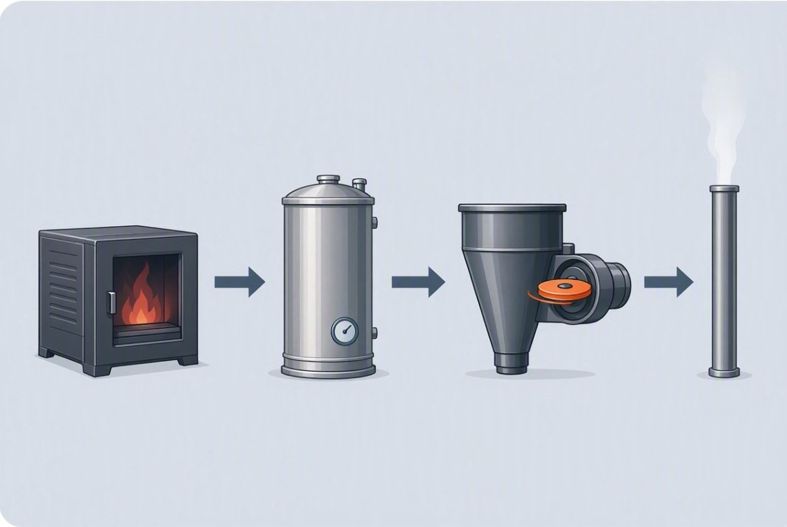
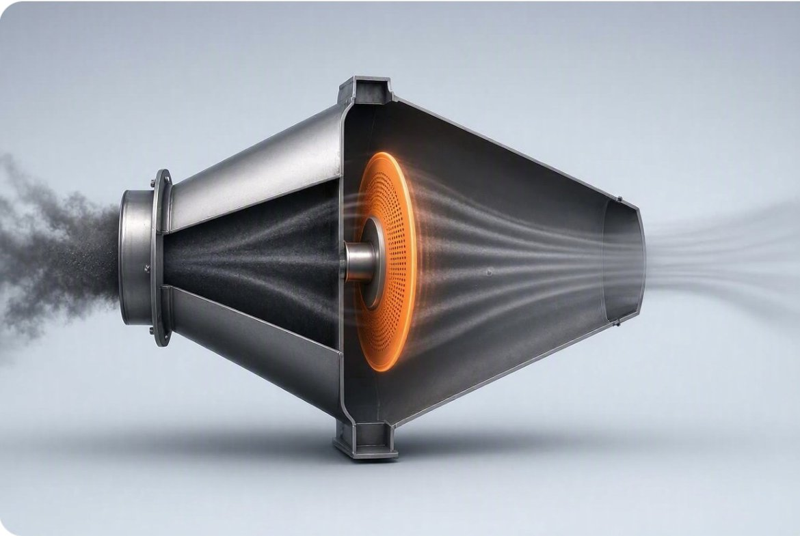

Dirty gas in.
Clean gas out. Ash in the hopper.
Flue gas from the boiler enters the collector housing. A rotating collection disc — variable in movement, speed and displacement — intercepts entrained particles of any size or distribution, self-adjusting to the volume of flow. Collected ash drops into hoppers below and is discharged partially wet, so nothing scatters in the wind.


One moving part. Zero drama.
In lieu of flat plates, rappers and electrodes — the failure points of conventional electrostatic precipitators — the RPC uses a single connection unit, suitably sized through Sidel Systems' proprietary design.
The collector plate system is self-cleaning, powered by an external, easily accessible electrical drive. Low pressure drop means lower fan energy and lower operating cost.
Smart from the factory.
Control and monitoring systems come preprogrammed for automatic or manual operation. Data streams in real time — collection rates, gas flow, power consumption — with controls that adjust automatically.
That telemetry can be sent to any website of choice, or straight to the smartphones of your operations personnel. The whole assembly ships as a fully assembled package — minimal site setup, corrosion-resistant construction, guaranteed durability, with man-ways, platforms and ladders built in for easy maintenance.